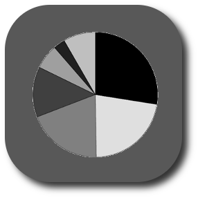
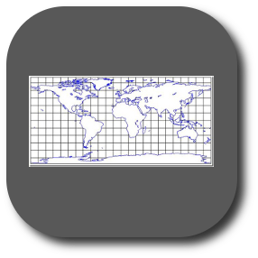
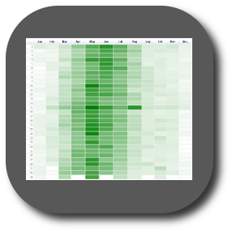
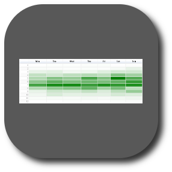
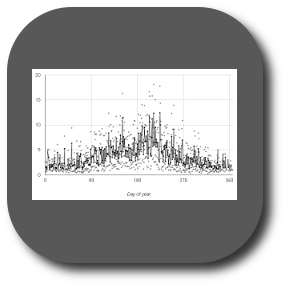
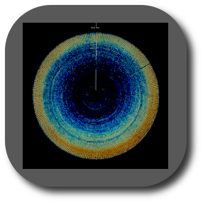
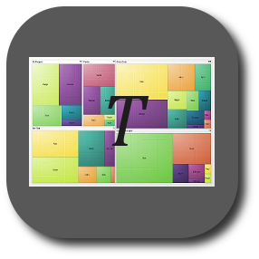
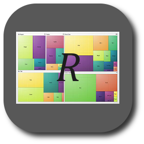

Biodiversity Datasets Assessment ToolDEPT. ZOOLOGY AND ECOLOGY |

| Click one to see example and description | Info |
 Records per dataset |
Records per type |
Collections per type of record |
 Map |
Records per country |
Records per year (Filtered) |
Records per year (All) |
 Record density, day of year |
 Record density, day of week |
|  Average records among years |
 Chronhorogram |
Records per kingdom |
 Tree Map of Taxonomy |
 Tree Map of Records |